생산자동화산업기사 (2012-03-04 기출문제)
1과목: 기계가공법 및 안전관리
1. 드릴의 날끝각이 118° 로 되어 있으면서도 날끝의 좌우길이가 다르다면 날끝의 좌우길이가 같을 때보다 가공 후의 구멍치수 변화는?
- 더 커진다.
- 변함없다.
- 타원형이 된다.
- 더 작아진다.
(정답률: 78%)

2. 연삭숫돌에서 눈메움 현상의 발생 원인이 아닌 것은?
- 숫돌의 원주 속도가 느린 경우
- 숫돌의 입자가 너무 큰 경우
- 연삭 깊이가 큰 경우
- 조직이 너무 치밀한 경우
(정답률: 57%)
3. 보통선반작업시의 안전사항으로 올바른 것은?
- 칩에 의한 상처를 방지하기 위해 소매가 긴 작업복과 장갑을 끼도록 한다.
- 칩이 공작물에 걸려 회전할 때는 즉시 기계를 정지 시키고 칩을 제거한다.
- 거친 절삭일 경우는 회전 중에 측정한다.
- 측정 공구는 주축대 위나 베드 위에 놓고 사용한다.
(정답률: 77%)
4. 전기스위치를 취급할 때 틀린 것은?
- 정전시에는 반드시 끈다.
- 스위치나 습한 곳에 설비되지 않도록 한다.
- 기계운전시 작업자에게 연락 후 시동한다.
- 스위치를 뺄 때는 부하를 크게 한다.
(정답률: 91%)
5. 다음은 정밀입자 가공을 나타낸 것이다. 이에 속하지 않는 것은?
- 슈퍼피니싱
- 배럴가공
- 호닝
- 래핑
(정답률: 66%)
6. 시준기와 망원경을 조합한 것으로 미소 각도를 측정할 수 있는 광학적 각도 측정기는?
- 베벨 각도기
- 오토 콜리메이터
- 광학식 각도기
- 광학식 클리노미터
(정답률: 67%)
7. 텔레 스코핑 게이지로 측정할 수 있는 것은?
- 진원도 측정
- 안지름 측정
- 높이 측정
- 깊이 측정
(정답률: 63%)
8. 밀링 머신에 사용되는 부속장치가 아닌 것은?
- 아버
- 어댑터
- 바이스
- 방진구
(정답률: 75%)
9. 기어가공에서 창성에 의한 절삭법이 아닌 것은?
- 형판에 의한 방법
- 래크 커터에 의한 방법
- 호브에 의한 방법
- 피니언 커터에 의한 방법
(정답률: 65%)
10. 다음 나사산의 각도측정 방법으로 틀린 것은?
- 공구 현미경에 의한 방법
- 나사 마이크로미터에 의한 방법
- 투영기에 의한 방법
- 만능 측정현미경에 의한 방법
(정답률: 61%)
11. 초경합금의 사용선택 기준을 표시하는 내용 중 ISO 규격에 해당되지 않는 공구는?
- M계열
- N계열
- K계열
- P계열
(정답률: 60%)
12. 다음 연삭숫돌의 입자 중 주철이나 칠드주물과 같이 경하고 취성이 많은 재료의 연삭에 적합한 것은?
- A 입자
- B 입자
- WA 입자
- C 입자
(정답률: 61%)
13. 선반의 나사절삭 작업시 나사의 각도를 정확히 맞추기 위하여 사용되는 것은?
- 플러그 게이지
- 나사 피치 게이지
- 한계 게이지
- 센터 게이지
(정답률: 55%)
14. 1인치에 4산의 리드스크루를 가진 선반으로 피치4mm의 나사를 깎고자 할 때, 변환 기어 이수를 구하면? (단, A는 주축기어의 이수, B는 리드스크루의 이수이다.)
- A : 80, B : 137
- A : 120, B : 127
- A : 40, B : 127
- A : 80, B : 127
(정답률: 54%)
15. 스패너 작업시 안전사항으로 옳은 것은?
- 너트의 머리치수보다 약간 큰 스패너를 사용한다.
- 꼭 조일 때는 스패너 자루에 파이프를 끼워 사용한다.
- 고정 조(jaw)에 힘이 많이 걸리는 방향에서 사용한다.
- 너트를 조일 때는 스패너를 깊게 물려서 약간씩 미는 식으로 조인다.
(정답률: 55%)
16. 테이블의 이동거리가 전후 300mm. 좌우 850mm, 상하 450mm인 니형 밀링머신의 호칭번호로 옳은 것은?
- 1호
- 2호
- 3호
- 4호
(정답률: 67%)
17. 밀링분할대로 3° 의 각도를 분할하는데, 분할 핸들을 어떻게 조작하면 되는가? (단, 브라운 샤프형 No.1의 18서열을 사용한다.)
- 5구멍씩 이동
- 6구멍씩 이동
- 7구멍씩 이동
- 8구멍씩 이동
(정답률: 75%)
18. 보통 선반에서 테이퍼나사를 가공하고자 할 때 절삭방법으로 틀린 것은?
- 바이트의 높이는 공작물의 중심선보다 높게 설치하는 것이 편리하다.
- 심압대를 편위시켜 절삭하면 편리하다.
- 테이퍼 절삭장치를 사용하면 편리하다.
- 바이트는 테이퍼부에 직각이 되도록 고정한다.
(정답률: 71%)
19. 절삭유제에 관한 설명으로 틀린 것은?
- 극압유는 절삭공구가 고온, 고압상태에서 마찰을 받을 때 사용한다.
- 수용성 절삭유제는 점성이 낮으며, 윤활작용은 좋으나 냉각작용이 좋지 못하다.
- 절삭유제는 수용성과 불수용성, 그리고 고체윤활제로 분류한다.
- 불수용성 절삭유제는 광물성인 등유, 경유, 스핀들유, 기계유 등이 있으며 그대로 또는 혼합하여 사용한다.
(정답률: 75%)
20. CNC 공작기계 서보기구의 제어방식에서 틀린 것은?
- 단일회로
- 개방회로
- 폐쇄회로
- 반 폐쇄회로
(정답률: 62%)
2과목: 기계제도 및 기초공학
21. 그림과 같은 도면에서 “가” 부분에 들어갈 가장 적절한 기하공차 기호는?
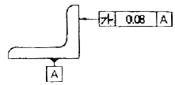
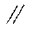
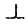
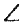
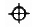
(정답률: 85%)
22. 다음 나사의 도시법에 관한 설명 중 옳은 것은?
- 암나사의 골지름은 가는 실선으로 표현한다.
- 암나사의 안지름은 가는 실선으로 표현한다.
- 수나사의 바깥지름은 가는 실선으로 표현한다.
- 수나사의 골지름은 굵은 실선으로 표현한다.
(정답률: 50%)
23. 보기와 같이 정면도와 평면도가 표시될 때 우측면도가 될 수 없는 것은?
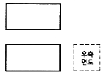
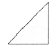
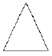
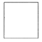
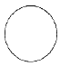
(정답률: 80%)
24. KS 재료기호 중 열간압연 연강판 및 강대에서 드로잉용에 해당하는 재료기호는?
- SNCD
- SPCD
- SPHD
- SHPD
(정답률: 67%)
25. 그림과 같은 도면에서 치수 20 부분의 굵은 1접 쇄선표시가 의미하는 것으로 가장 적합한 설명은?
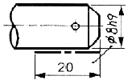
- 공차가 ø8h9 되게 축 전체 길이부분에 필요하다.
- 공차 ø8h9 부분은 축 길이 20 되는곳 까지만 필요하다.
- 치수 20 부분을 제외하고 나머지 부분은 공차가 ø8h9 되게 가공한다.
- 공차가 ø8h9 보다 약간 적게 한다.
(정답률: 75%)
26. 표면의 결 도시방법에서 가공에 의한 커터 줄무늬 방향이 기입한 면의 중심에 대하여 대략 동심원 모양 일 때 기호는?
- X
- M
- C
- R
(정답률: 79%)
27. 다음 중 가공 방법과 그 기호의 관계가 틀린 것은?
- 호닝 가공 : GH
- 래핑 : FL
- 스크레이핑 : FS
- 줄 다듬질 : FB
(정답률: 71%)
28. 기계제도에서 사용하는 기호 중 치수 숫자와 병기하여 사용되지 않은 것은?
- SR
- □
- C
- ■
(정답률: 73%)
29. 다음 중 치수 공차가 가장 작은 것은?
- 50±0.01
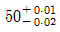
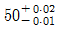
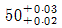
(정답률: 50%)
30. 단면도의 절단된 부분을 나타내는 해칭선을 그리는 선은?
- 가는 2점 쇄선
- 가는 실선
- 가는 파선
- 가는 1점 쇄선
(정답률: 71%)
31. 다음 중 오옴의 법칙을 나타낸 식으로 옳은 것은? (단, V : 전압, I : 전류, R : 저항 이다.)
- V = 2R + I
- V = R / I
- V = I × R
- V = I / R
(정답률: 83%)
32. 재료의 직경이 20mm이고, 길이가 100mm인 환봉의 부피(mm3)를 구하는 식은?
- V = π × 202 × 100
- V = 2π × 20 × 100
- V = (π × 102 / 4) × 100
- V = (π × 202 / 4) × 100
(정답률: 68%)
33. 물체의 형태나 크기가 달라지지 않은 한 그 물체의 무게가 달라진다고 볼 수 없는데 이와 같이 변치 않은 물체고유의 무게를 무엇이라고 하는가?
- 질량
- 중력
- 힘
- 가속도
(정답률: 86%)
34. 다음 중 전류가 잘 흐르지 못하도록 방해하는 작용을 하는 것으로 맞는 것은?
- 전압
- 전류
- 저항
- 전기장
(정답률: 86%)
35. 다음 중 모멘트에 대한 설명 중 맞는 것은?
- 모멘트는 방향성을 갖지 않는다.
- 모멘트는 모멘트의 중심에서 접선 방향의 힘의 작용점까지의 거리가 길수록 작아진다.
- 모멘트는 작용점의 거리가 0 이면 모멘트는 0 이다.
- 모멘트는 힘을 가하여 물체를 수평 이동 시키는 경우에 발생한다.
(정답률: 70%)
36. 다음 중 압력의 단위인 파스칼(Pa)과 같은 것은?
- kg·m/sec2
- N·m
- N/m2
- J
(정답률: 71%)
37. 다음 응력에 대한 설명으로서 잘못된 것은?
- 인장응력 - 인장하중에 의해 생성
- 압축응력 - 압축하중에 의해 생성
- 수직응력 - 인장응력 또는 압축응력
- 접선응력 - 전단응력 또는 굽힘응력
(정답률: 72%)
38. 힘의 3요소가 아닌 것은?
- 힘의 크기
- 힘의 방향
- 힘의 작용점
- 힘의 작용선
(정답률: 85%)
39. 컨베이어 시스템에서 물체가 5분에 9m 이동한다면 이 컨베이어 시스템의 속도는 몇 cm/s 인가?
- 0.3
- 1.8
- 3
- 18
(정답률: 66%)
40. 힌지로 고정된 길이가 L 인 봉의 끝에 직각방향으로 힘 F를 작용시킬 때 힌지에 발생하는 모멘트 M을 구하는 식은?
- M = F × L2
- M = F × L
- M = F ÷ L
- M = L ÷ F
(정답률: 83%)
3과목: 자동제어
41. 다음 중 전달함수 G(s) = (s+b)/(s+a)를 갖는 회로가 진상보상회로의 특성을 갖기 위한 조건은? (단, a와 b의 값은 절대값이다.)
- a ＞ b
- b ＞ a
- s = b
- s = a
(정답률: 50%)
42. 다음 중 전기자 반작용에 의한 여자작용을 이용하는 회전증폭기는?
- 로터트롤
- 앰플리다인
- 자기증폭기
- 차동증폭기
(정답률: 51%)
43. 아날로그 센서에서 출력되는 전기신호를 컴퓨터에서 처리 할 수 있도록 디지털 값으로 변환해 주는 장치는?
- OP 앰프
- 인버터
- D/A 컨버터
- A/D 컨버터
(정답률: 79%)
44. 1차 시스템의 시정수에 관한 다음 설명 중 옳은 것은?
- 시정수가 클수록 오버슈트가 크다.
- 시정수가 클수록 정상상태오차가 작다.
- 시정수가 작을수록 응답속도가 빠르다.
- 시정수는 응답속도에 영향을 주지 않는다.
(정답률: 72%)
45. 공기압 발생장치에서 보내온 공기 중 수분, 먼지, 등이 포함되어 있다. 이러한 것을 막아 공압기기를 보호하기 위해 설치하는 것은?
- 압축공기 필터
- 압축공기 조절기
- 압축공기 드라이어
- 압축공기 윤활기
(정답률: 87%)
46. 다음 중 제어량을 어떤 일정한 목표값으로 유지하는 것을 목적으로 하는 정치제어에 속하지 않는 것은?
- 암모니아 합성 프로세서 제어
- 주파수 제어
- 자동전압 조정장치
- 발전기의 조속기
(정답률: 67%)
47. 다음 중 입력이 어떤 정상 상태에서 다른 상태로 변화했을 때, 출력이 정상 상태에 도달할 때까지의 응답은?
- 과도 응답
- 스텝 응답
- 램프 응답
- 임펄스 응답
(정답률: 66%)
48. 시퀀스 제어와 비교한 되먹임 제어의 가장 큰 특징은?
- 출력을 검출하는 장치가 있다.
- 입력과 출력을 비교하는 장치가 있다.
- 응답속도를 빠르게 하는 장치가 있다.
- 비상정지를 할 수 있는 장치가 있다.
(정답률: 81%)
49. 다음 중 유압 회로에서 유압 실린더나 액추에이터로 공급하는 유체의 흐름의 양을 변화시키는 밸브는?
- 유량제어 밸브
- 압력제어 밸브
- 압력 스위치
- 방향제어 밸브
(정답률: 86%)
50. 다음 중 되먹임 제어의 특징과 관계없는 것은?
- 제어기 성능이 나빠지더라도 큰 영향을 받지 않는 다.
- 전체 제어계가 불안정 해질 수 있다.
- 제어 특성이 향상되고 목표값에 정확히 도달할 수 있다.
- 구조가 간단해지므로 설치비가 저렴하다.
(정답률: 76%)
51. 다음 서보기구에 대한 설명 중 옳지 않은 것은?
- 제어량이 기계적 변위인 자동제어계를 의미한다.
- 일반적으로 신호변환부와 파워변환부로 구성된다.
- 신호변환 시 전기식보다는 유압식이 많이 사용된다.
- 서보기구의 파워변화부는 증력 및 조작을 행하는 부분이다.
(정답률: 82%)
52. 다음 제어기 중에서 제어 결과에 빨리 도달하도록 미분 동작을 부가하여 응답속도만을 개선한 것은?
- P 제어기
- PI 제어기
- PD 제어기
- PID 제어기
(정답률: 64%)
53. 릴리프 밸브 등에서 밸브 시트를 두들겨서 비교적 높은 음을 발생시키는 일종의 자력 진동현상은?
- 캐비테이션
- 서지압력
- 채터링
- 크래킹압력
(정답률: 70%)
54. f(t) = te-t의 라플라스(Laplace) 변환을 구한 것은?
- 1/(s+1)2
- 1/(s+1)
- 1/(s-1)
- 1/(s-1)2
(정답률: 56%)
55. 물체의 위치, 방위, 자세 등의 기계적 변위를 제어량으로 해서 목표값의 임의의 변화에 추종하도록 구성된 제어계는?
- 서보 기구
- 프로세스 제어
- 자동 조정
- 정치 제어
(정답률: 80%)
56. 다음 중 로타리 엔코더에서 출력되는 펄스 신호를 PLC에 입력시키기 위해서 사용하는 특수 유니트 명칭은?
- 컴퓨터 링크 유니트
- PID 유니트
- 고속 카운터 유니트
- 위치 결정 유니트
(정답률: 60%)
57. 전달함수 G(s)=1+sT인 제어계에서 ωT=1000일 때, 이득은 약 몇 [dB]인가?
- 80
- 60
- 30
- 10
(정답률: 66%)
58. PLC에서 입력시키는 프로그램을 기억하기 위해 RAM을 사용하는 메모리는?
- 연산제어 메모리
- 제어용 메모리
- 입출력 메모리
- 프로그램 메모리
(정답률: 70%)
59. 다음 개루프 전달함수에 대한 제어시스템의 근궤적의 개수는?
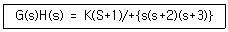
- 1
- 2
- 3
- 4
(정답률: 63%)
60. PC제어의 장점이 아닌 것은?
- 비용 절감
- 호환성 증대
- 유지보수 용이
- 메이커 전용의 카드 사용
(정답률: 76%)
4과목: 메카트로닉스
61. 마이크로프로세서에서 인터럽트 발생의 일반적인 요인이 아닌 것은?
- 정전이 발생
- 서브루틴을 콜 하는 경우
- 오버플로우가 발생되는 경우
- 입ㆍ출력장치의 작업 완료
(정답률: 53%)
62. 자기장 내에 있는 도체에 전류를 흐르게 하면 발생되는 힘 F[N]는? (단, B는 자속밀도, l은 도체의 길이, I는 전류, θ는 자기장과 도체가 이루는 각도이다.)
- F=BIlsinθ
- F=BIlcosθ
- F=BIltanθ
- F=BIltan-1θ
(정답률: 64%)
63. 다음은 게이지블록으로 치수 조합하는 방법을 설명한 것으로 틀린 것은?
- 조합의 개수를 최소로 한다.
- 정해진 치수를 고를 때는 맨 끝자리부터 고른다.
- 소수점 아래 첫째짜리 숫자가 5보다 큰 경우 5를 뺀 나머지 숫자부터 고른다.
- 두꺼운 것과 얇은 것과의 밀착은 두꺼운 것을 얇은 것의 한쪽에 대고 누르면서 밀착한다.
(정답률: 69%)
64. 콘덴서의 용량을 결정하는 요소가 아닌 것은?
- 극판간의 거리
- 서로 대면하는 극판의 넓이
- 극판사이의 유전체 종류
- 극판을 만드는 금속체의 종류
(정답률: 65%)
65. 일반적인 선반가공 작업으로 적합하지 않는 것은?
- 외경절삭 작업
- 구멍파기 작업
- 기어절삭 작업
- 나사절삭 작업
(정답률: 71%)
66. 거리 계측이나 두께를 측정할 때 초음파의 강한 반사성과 전파성의 지연을 효과적으로 응용한 센서는?
- 광센서
- 초음파 센서
- 자기센서
- 레이저 가이드 센서
(정답률: 84%)
67. 100[V]의 전위차로 5[A]의 전류가 2분간 흘렀을 때 이때 전기는 몇 [J]의 일을 하는가?
- 100
- 6000
- 60000
- 500
(정답률: 73%)
68. 스테핑모터의 종류를 나타낸 것 중 틀린 것은?
- 영구자석형 스테핑모터
- 가변 릴럭턴스형 스테핑모터
- 브러시형 스테핑모터
- 하이브리드형 스테핑모터
(정답률: 63%)
69. 스텝 각이 1.8° 인 2상 HB형 스테핑모터를 반스텝시퀀스(1-2상 여자)로 구동하면 1 펄스당 회전각은?
- 0.9°
- 1.8°
- 3.6°
- 9.9°
(정답률: 68%)
70. 프로그램의 문제점을 찾아내서 수정하는 작업을 무엇이라 하는가?
- 어셈블링
- 디버깅
- 컴파일링
- 인터프리팅
(정답률: 76%)
71. 다음 게이트 회로의 등가 논리식은?
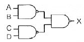
- X = (A ㆍ B) + (C ㆍ D)
- X = (A ㆍ B) ㆍ (C ㆍ D)
- X = (A + B) + (C + D)
- X = (A + B) ㆍ (C + D)
(정답률: 39%)
72. 패리티(parity) 비트의 목적으로 맞는 것은?
- 데이터 변환
- 속도 가변
- 에러 검사
- 부호 변환
(정답률: 78%)
73. 다음 중 열전쌍은 어떤 변환을 이용하는 기기인가?
- 변위를 전류로 변환
- 압력을 전류로 변환
- 각도를 전압으로 변환
- 온도를 전압으로 변환
(정답률: 87%)
74. 유리, 세라믹 등 취성이 강한 재료에 정밀한 구멍가공을 하려고 한다. 이 작업공정에 가장 적합한 특수 가공법은?
- 초음파 가공
- 밀링 가공
- 연삭 가공
- 방전 가공
(정답률: 78%)
75. 동기 전동기에서 자극수가 4극이면 60Hz의 주파수로 전원 공급할 때, 회전수는 몇 rpm 이 되는가?
- 1200
- 1800
- 3600
- 7200
(정답률: 64%)
76. 논리식
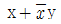
와 같은 식은?- x +
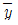
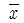
+ y- x + y
- xy
(정답률: 56%)
77. 저항 R1, R2, R3이 직렬로 연결되어 있을 때와 이들이 병렬로 연결되어 있을 때의 합성저항의 비(직렬/병렬)는 얼마인가? (단, R1=R2=R3 이다.)
- 1
- 3
- 6
- 9
(정답률: 62%)
78. 트랜지스터에서 각 단자에 흐르는 전류가 베이스는 50[mA], 컬렉터는 500[mA]가 흐른다면 이미터전류 IE로 맞는 것은?
- 100[mA]
- 450[mA]
- 550[mA]
- 25000[mA]
(정답률: 72%)
79. 다음 중 체결용 나사로 적합한 것은?
- 삼각나사
- 볼나사
- 사다리꼴나사
- 사각나사
(정답률: 60%)
80. 다음 논리식을 간단히 한 것 중 틀린 것은?
- A + A · B = A
- A · (A + B) = A
- A ·
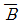
+ B = B - (A +
 ) · B = A · B
) · B = A · B
(정답률: 52%)